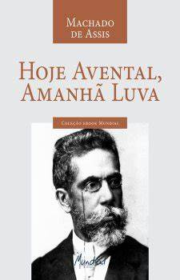
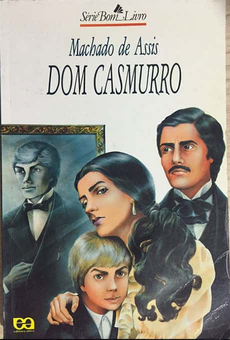
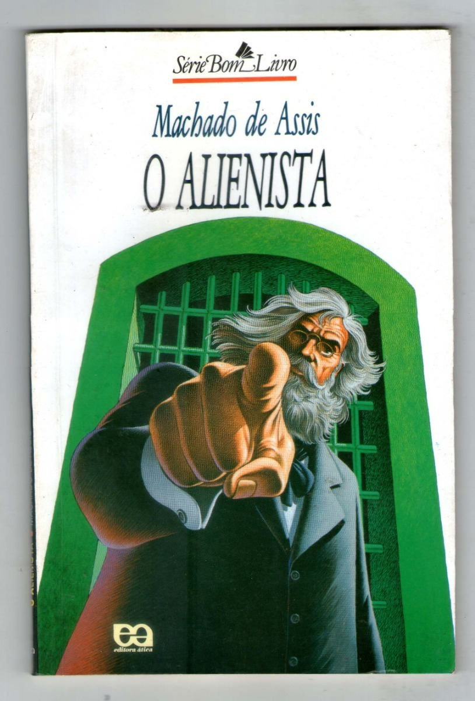
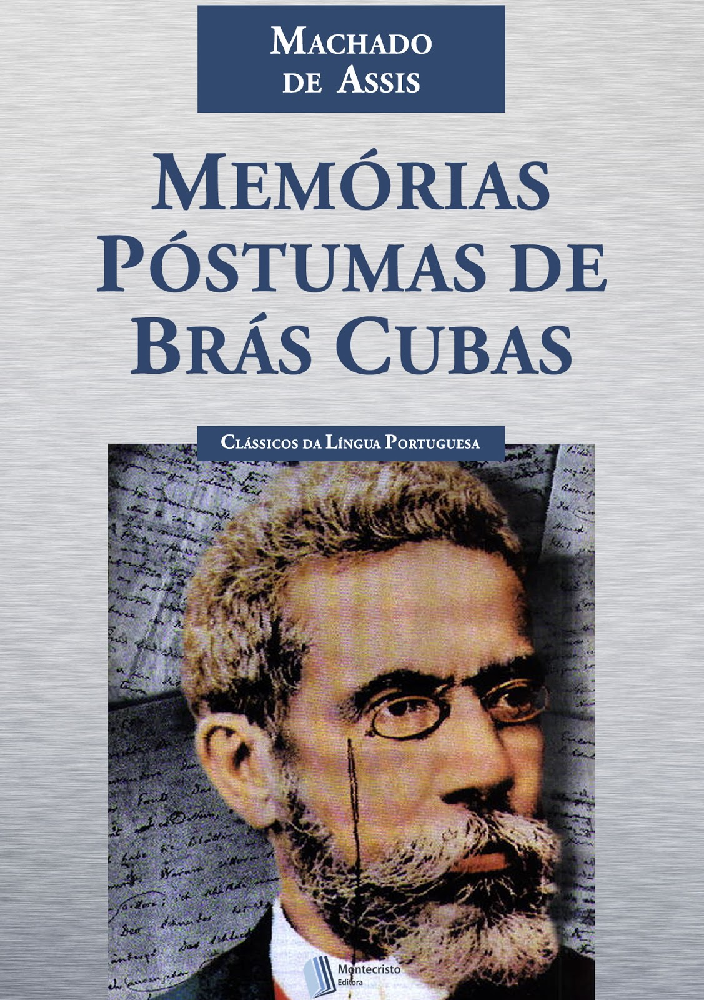

- Hoje avental, amanhã luva (1860) — teatro
- Desencantos (1861) — teatro
- O caminho da porta (1863) — teatro
- O protocolo (1863) — teatro
- Crisálidas (1864) — poesia
- Quase ministro (1864) — teatro
- As forcas caudinas (1865) — teatro
- Os deuses de casaca (1866) — teatro
- Contos fluminenses (1870) — contos
- Falenas (1870) — poesia
- Ressurreição (1872) — romance
- Histórias da meia-noite (1873) — contos
- A mão e a luva (1874) — romance
- Americanas (1875) — poesia
- Helena (1876) — romance
- Iaiá Garcia (1878) — romance
- Ocidentais (1880) — poesia
- Tu, só tu, puro amor (1881) — teatro
- Memórias póstumas de Brás Cubas (1881) — romance
- Papéis avulsos (1882) — contos
- Histórias sem data (1884) — contos
- Casa velha (1885) — romance
- Quincas Borba (1891) — romance
- Várias histórias (1896) — contos
- Não consultes médico (1896) — teatro
- Dom Casmurro (1899) — romance
- Páginas recolhidas (1899) — contos
- Esaú e Jacó (1904) — romance
- Relíquias de casa velha (1906) — contos
- Lição de botânica (1906) — teatro
- Memorial de Aires (1908) — romance"